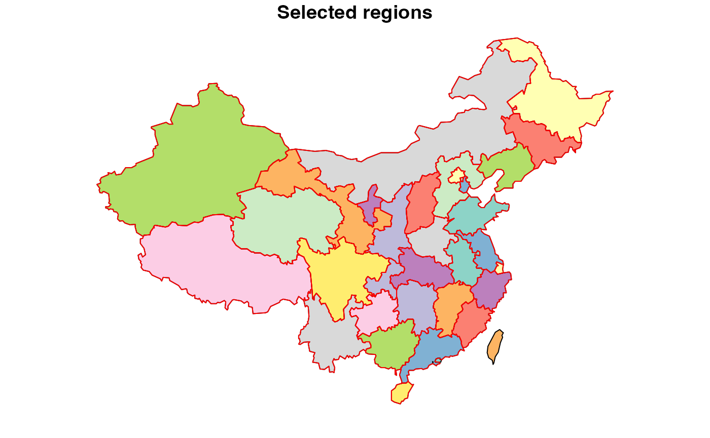
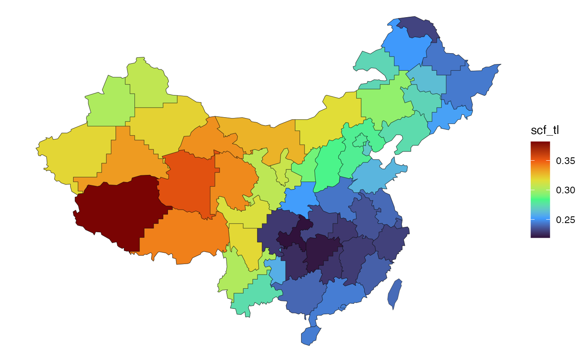
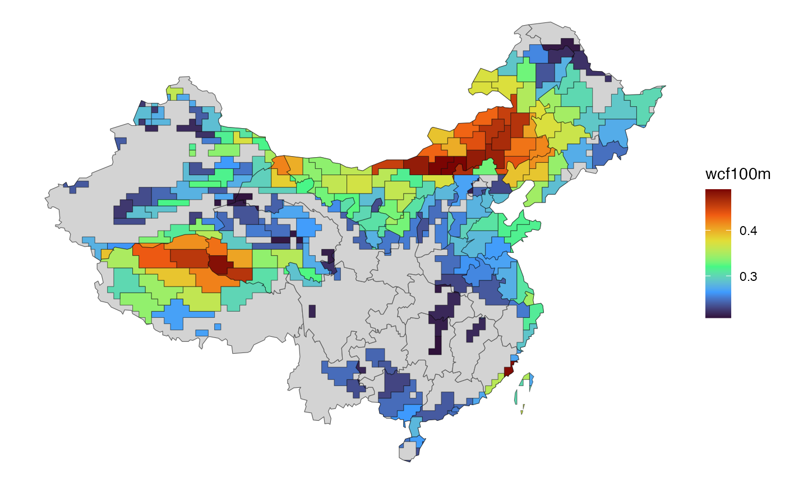
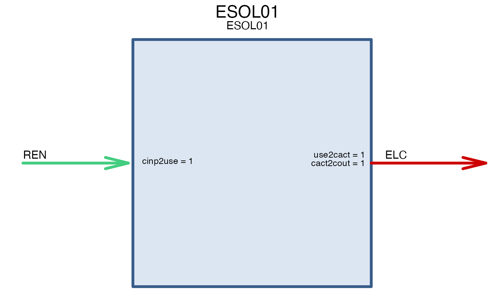

gis_sf <- cepro_maps$mainland_r34
plot(gis_sf["region"], reset = F, main = "Selected regions")
# keep mainland regions only
gis_sf <- gis_sf %>%
filter(!grepl("CHN|TW|HK|MO", region))
plot(gis_sf["region"], add = T, col = NA, border = "red", lwd = 1)
(reg_names <- gis_sf$region)
#> [1] "XJ" "XZ" "NM" "QH" "SC" "HL" "GS" "YN" "GX" "HN" "SN" "GD" "JL" "HE" "HB"
#> [16] "GZ" "SD" "JX" "HA" "LN" "SX" "AH" "FJ" "ZJ" "JS" "CQ" "NX" "HI" "BJ" "TJ"
#> [31] "SH"
calendar_full_year <- newCalendar(cepro_timetables$d365_h24)
# subset calendar, selecting 15th day of month
calendar_12d_24h <- newCalendar(
cepro_timetables$d12_h24,
year_fraction = sum(cepro_timetables$d12_h24$share))
COA <- newCommodity(
name = "COA",
desc = "Generic coal",
emis = list(
comm = "CO2",
unit = "kt/GWh",
emis = convert("kt/PJ", "kt/GWh", 102)
),
slice = "ANNUAL"
)
OIL <- newCommodity(
name = "OIL",
desc = "Oil",
emis = list(
comm = "CO2",
unit = "kt/GWh",
emis = convert("kt/PJ", "kt/GWh", 83)
),
slice = "ANNUAL"
)
GAS <- newCommodity(
name = "GAS",
desc = "Generic coal",
emis = list(
comm = "CO2",
unit = "kt/GWh",
emis = convert("kt/PJ", "kt/GWh", 70)
),
slice = "ANNUAL"
)
BIO <- newCommodity(
name = "BIO",
desc = "Generic biomass, all types",
slice = "ANNUAL"
)
ELC <- newCommodity('ELC', desc = "Electricity", slice = "HOUR")
CO2 <- newCommodity('CO2', desc = "Carbon Dioxide Emissions", slice = "HOUR")
NUC <- newCommodity("NUC", desc = "Nuclear energy", slice = "ANNUAL")
# Renewable energy, detailed (increases the model size)
# HYD <- newCommodity("HYD", desc = "Hydro energy", slice = "ANNUAL")
# SOL <- newCommodity('SOL', desc = "Solar energy", slice = "ANNUAL")
# WIN <- newCommodity('WIN', desc = "Onshore wind energy", slice = "ANNUAL")
# WIF <- newCommodity('WIF', desc = "Offshore wind energy", slice = "ANNUAL")
# Renewable energy one-for-all (to minimize the model size)
REN <- newCommodity('REN', desc = "All renewables (non-fuels)", slice = "ANNUAL")
SUP_NUC <- newSupply(
name = "SUP_NUC",
commodity = "NUC",
unit = "GWh",
availability = list(
# http://www.world-nuclear.org/information-library/economic-aspects/economics-of-nuclear-power.aspx
cost = convert("USD/kWh", "MRMB/GWh", .39/100)
),
slice = "ANNUAL"
)
RES_REN <- newSupply(
name = "RES_REN",
desc = "Renewable energy (all types)",
commodity = "REN",
unit = "GWh",
slice = "HOUR"
)
SUP_COA <- newSupply(
name = "SUP_COA",
desc = "Supply of coal",
commodity = "COA",
unit = "PJ",
# reserve = list(res.up = 1e6),
availability = list(
year = c(2010, 2020, 2050),
# ava.up = c(1000, 2000, 10000),
cost = c(convert("USD/tce", "MRMB/GWh", c(70, 80, 100) / .7))
),
slice = "ANNUAL"
)
# Bio energy
bio_PJ <- cepro_data$bio_resource_PJ
# Check
all(bio_PJ$region %in% reg_names)
#> [1] TRUE
all(reg_names %in% bio_PJ$region)
#> [1] TRUE
SUP_BIO <- newSupply(
name = "SUP_BIO",
desc = "Biomass resource, annual",
commodity = "BIO",
unit = "PJ",
# weather = list(weather = "WEATHER", wava.up = 1),
availability = data.frame(
# year = c(2010, 2020, 2050),
region = bio_PJ$region,
ava.up = 0.5 * bio_PJ$bio_PJ, # Assumption, 50% for ELC generation
cost = convert("USD/tce", "MRMB/GWh", 100) # assumption - transaction costs
),
slice = "ANNUAL"
)
DEM_ELC_FLAT <- newDemand(
name = "DEM_ELC_FLAT",
commodity = "ELC",
unit = "GWh",
dem = list(
year = cepro_data$elc_cons_hourly_average_GWh$year,
region = cepro_data$elc_cons_hourly_average_GWh$region,
slice = cepro_data$elc_cons_hourly_average_GWh$slice,
dem = cepro_data$elc_cons_hourly_average_GWh$elc_con_dh_GWh
)
)
a <- ggplot(cepro_maps$sol_GW_max_sf) +
geom_sf(fill = "lightgrey", data = gis_sf) +
geom_sf(aes(fill = scf_tl), color = alpha("black", .5)) +
scale_fill_viridis_c(option = "H", direction = 1) +
# labs(title = "clastered solar locations") +
theme_void()
try(a)
solar <- cepro_maps$sol_GW_max_sf %>%
mutate(
weather = paste0("WSOL", formatC(cluster, width = 2, flag = "0")),
tech_name = paste0("ESOL", formatC(cluster, width = 2, flag = "0")),
.after = "region"
)
# cepro_merra_sol_cl
repo_solar_cf <- newRepository("repo_solar_cf")
if (nrow(solar) > 0) {
for (w in unique(solar$weather)) {
# stop()
xi <- filter(solar, weather %in% w)
x <- cepro_merra_sol_cl %>%
filter(cluster %in% unique(xi$cluster))
WSOL <- newWeather(
name = w,
desc = "Solar generation profile",
slice = "HOUR",
weather = data.frame(
region = x$region,
slice = x$slice,
wval = x$scf_tl
)
)
repo_solar_cf <- add(repo_solar_cf, WSOL); rm(WSOL)
}
}
repo_solar_cf %>% names()
#> [1] "WSOL01" "WSOL02" "WSOL03" "WSOL04" "WSOL05"
a <- ggplot(cepro_maps$win_GW_max_sf) +
geom_sf(fill = "lightgrey", data = gis_sf) +
geom_sf(aes(fill = wcf100m), color = alpha("black", .5)) +
scale_fill_viridis_c(option = "H", direction = 1) +
# labs(title = "clastered solar locations") +
theme_void()
try(a)
# cepro_merra_win_cl
wind <- cepro_maps$win_GW_max_sf %>%
mutate(
weather = paste0("WWIN", formatC(cluster, width = 2, flag = "0")),
tech_name = paste0("EWIN", formatC(cluster, width = 2, flag = "0")),
.after = "region"
) %>%
filter(cluster <= 10)
wind$cluster %>% unique()
#> [1] 1 2 3 4 5 6 7 8 9 10
repo_wind_cf <- newRepository("repo_wind_cf")
if (nrow(wind) > 0) {
for (w in unique(wind$weather)) {
# stop()
xi <- filter(wind, weather %in% w)
x <- cepro_merra_win_cl %>%
filter(cluster %in% unique(xi$cluster))
WWIN <- newWeather(
name = w,
desc = "Wind generation profile",
slice = "HOUR",
weather = data.frame(
region = x$region,
slice = x$slice,
wval = x$wcf100m
)
)
repo_wind_cf <- add(repo_wind_cf, WWIN); rm(WWIN)
}
}
repo_wind_cf %>% names()
#> [1] "WWIN01" "WWIN02" "WWIN03" "WWIN04" "WWIN05" "WWIN06" "WWIN07" "WWIN08"
#> [9] "WWIN09" "WWIN10"
repo_solar_tech <- newRepository("repo_solar_tech")
if (nrow(solar) > 0) {
for (tch in unique(solar$tech_name)) {
# cat(tch, "")
# stop()
x <- filter(solar, tech_name %in% tch)
# x <- cepro_merra_sol_cl %>%
# filter(cluster %in% unique(xi$cluster))
tech <- newTechnology(
name = tch,
desc = x$tech_name[1],
# description = paste(x$generators_i, collapse = ", "),
input = list(comm = "REN", combustion = F),
output = list(comm = "ELC"),
cap2act = 24*365,
olife = list(olife = 25), # for 1-year model & annualized costs,
weather = list(
weather = x$weather[1],
waf.up = 1
),
region = unique(x$region),
# ceff = list(
# region = x$region,
# comm = "REN",
# cinp2use = 1
# ),
fixom = data.frame(
region = x$region,
fixom = 3.5/20 # assumption
),
# varom = list(
# region = x$region,
# varom = x$generators_marginal_cost
# ),
# stock = list(
# region = x$region,
# stock = x$generators_p_nom
# )
invcost = list(
invcost = convert(3.5, "RMB/W", "MRMB/GW")
) # overnight
)
repo_solar_tech <- add(repo_solar_tech, tech); rm(tech)
}
}
repo_solar_tech %>% names()
#> [1] "ESOL01" "ESOL02" "ESOL03" "ESOL04" "ESOL05"
draw(repo_solar_tech$ESOL01)
repo_wind_tech <- newRepository("repo_wind_tech")
if (nrow(wind) > 0) {
for (tch in unique(wind$tech_name)) {
# cat(tch, "")
# stop()
x <- filter(wind, tech_name %in% tch)
# x <- cepro_merra_win_cl %>%
# filter(cluster %in% unique(xi$cluster))
tech <- newTechnology(
name = tch,
desc = x$tech_name[1],
# description = paste(x$generators_i, collapse = ", "),
input = list(comm = "REN", combustion = F),
output = list(comm = "ELC"),
cap2act = 24*365,
olife = list(olife = 25), # for 1-year model & annualized costs
weather = list(
weather = x$weather[1],
waf.up = 1
),
region = unique(x$region),
# ceff = list(
# region = x$region,
# comm = "REN",
# cinp2use = 1
# ),
fixom = data.frame(
region = x$region,
fixom = 6.7/20 # assumption
),
# varom = list(
# region = x$region,
# varom = x$generators_marginal_cost
# ),
# stock = list(
# region = x$region,
# stock = x$generators_p_nom
# )
invcost = list(
invcost = convert(6.7, "RMB/W", "MRMB/GW")
) # overnight
)
repo_wind_tech <- add(repo_wind_tech, tech); rm(tech)
}
}
repo_wind_tech %>% names()
#> [1] "EWIN01" "EWIN02" "EWIN03" "EWIN04" "EWIN05" "EWIN06" "EWIN07" "EWIN08"
#> [9] "EWIN09" "EWIN10"
draw(repo_wind_tech@data[[1]])
STGELC <- newStorage(
name = 'STGELC',
commodity = 'ELC',
desc = "1-hours storage (battery)",
cap2stg = 1, # In PJ convert("GWh", "PJ"),
# afa = list(year = 2020, slice = "m06h23", afa.lo = .5),
olife = list(olife = 15),
# invcost = list(invcost = convert("USD/MWh", "MRMB/PJ", 180)), # Assumption
# invcost = list(invcost = convert("USD/kWh", "MRMB/PJ", 100)), # See IRENA 2030 (from 77 to 574, p.77)
invcost = list(invcost = convert("USD/kWh", "MRMB/GWh", 300)), # See IRENA 2030 (from 77 to 574, p.77)
seff = data.frame(inpeff = 0.8) # stgeff = .9,
)
repo_ren <- newRepository("repo_ren") %>%
add(
REN, ELC,
RES_REN,
repo_solar_cf,
repo_solar_tech,
# repo_wind_cf,
# repo_wind_tech,
LOSTLOAD,
STGELC,
DEM_ELC_FLAT
)
length(repo_ren)
#> [1] 16
print(repo_ren)
#> repository 'repo_ren': 16 objects.
#> name class
#> 1: REN commodity
#> 2: ELC commodity
#> 3: RES_REN supply
#> 4: WSOL01 weather
#> 5: WSOL02 weather
#> 6: WSOL03 weather
#> 7: WSOL04 weather
#> 8: WSOL05 weather
#> 9: ESOL01 technology
#> 10: ESOL02 technology
#> 11: ESOL03 technology
#> 12: ESOL04 technology
#> 13: ESOL05 technology
#> 14: LOSTLOAD import
#> 15: STGELC storage
#> 16: DEM_ELC_FLAT demand
names(repo_ren)
#> [1] "REN" "ELC" "RES_REN" "WSOL01" "WSOL02"
#> [6] "WSOL03" "WSOL04" "WSOL05" "ESOL01" "ESOL02"
#> [11] "ESOL03" "ESOL04" "ESOL05" "LOSTLOAD" "STGELC"
#> [16] "DEM_ELC_FLAT"
summary(repo_ren)
#> commodity demand import storage supply technology weather
#> 2 1 1 1 1 5 5
# Adjust annual parameters for partial year solution
# (temporary solution - until implementation of the method in energyRt)
# repo <- fract_year_adj_repo(repo, SUBSET_HOURS)
# repo_subset <- subset_slices_repo(repo, SLICE_SUBSET, YDAY_SUBSET)
# model-class object
mod <- newModel(
name = 'CEPRO_ren',
desc = "CEPRO renewables only",
## in case of infeasibility, `dummy` variables can be added
# debug = data.frame(#comm = "ELC",
# dummyImport = 1e6,
# dummyExport = 1e6),
region = unique(gis_sf$region),
discount = 0.05,
calendar = calendar_full_year,
data = repo_ren)
# Check the model time-slices
mod@config@calendar@timetable %>% as.data.table()
#> ANNUAL YDAY HOUR slice share
#> 1: ANNUAL d001 h00 d001_h00 0.0001141553
#> 2: ANNUAL d001 h01 d001_h01 0.0001141553
#> 3: ANNUAL d001 h02 d001_h02 0.0001141553
#> 4: ANNUAL d001 h03 d001_h03 0.0001141553
#> 5: ANNUAL d001 h04 d001_h04 0.0001141553
#> ---
#> 8756: ANNUAL d365 h19 d365_h19 0.0001141553
#> 8757: ANNUAL d365 h20 d365_h20 0.0001141553
#> 8758: ANNUAL d365 h21 d365_h21 0.0001141553
#> 8759: ANNUAL d365 h22 d365_h22 0.0001141553
#> 8760: ANNUAL d365 h23 d365_h23 0.0001141553
mod <- setHorizon(mod, 2015, 1)
mod@config@horizon # check
#> An object of class "horizon"
#> Slot "desc":
#> character(0)
#>
#> Slot "period":
#> [1] 2015
#>
#> Slot "intervals":
#> start mid end
#> 1: 2015 2015 2015
scen_ren_sub <- interpolate(mod, calendar_12d_24h)
# scen_ren <- interpolate(mod)
# scen_gms <- write_sc(
# scen_ren_sub,
# # solver = "gams", # see "solver_options_generic.r" file
# solver = GAMS_barrier,
# # solver = GAMS_new_maps,
# tmp.dir = file.path("tmp", "ren_test"))
#
# scen_gms <- solve(scen_gms, wait = F)
# scen_gms <- read(scen_gms)
scen_jump <- write_sc(
scen_ren_sub,
# solver = "JuMP", # see "solver_options_generic.r" file
# solver = GAMS_barrier_cbc,
# solver = GAMS_new_maps,
tmp.dir = file.path("tmp", "ren_test_julia"))
scen_jump <- solve(scen_jump, wait = F)[tbc..]